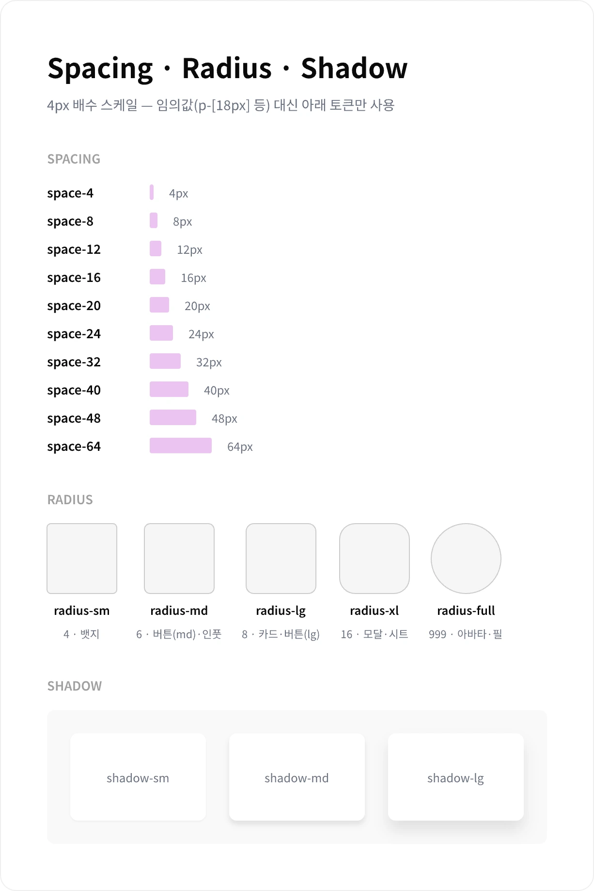
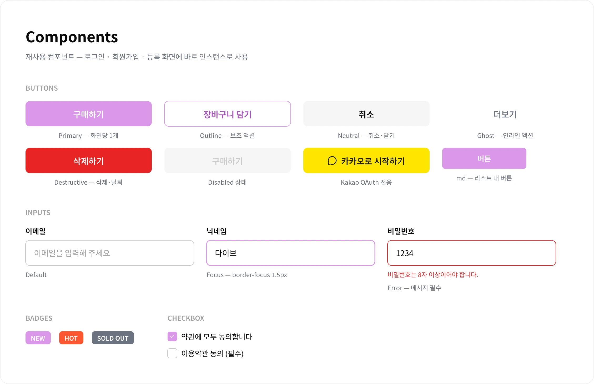
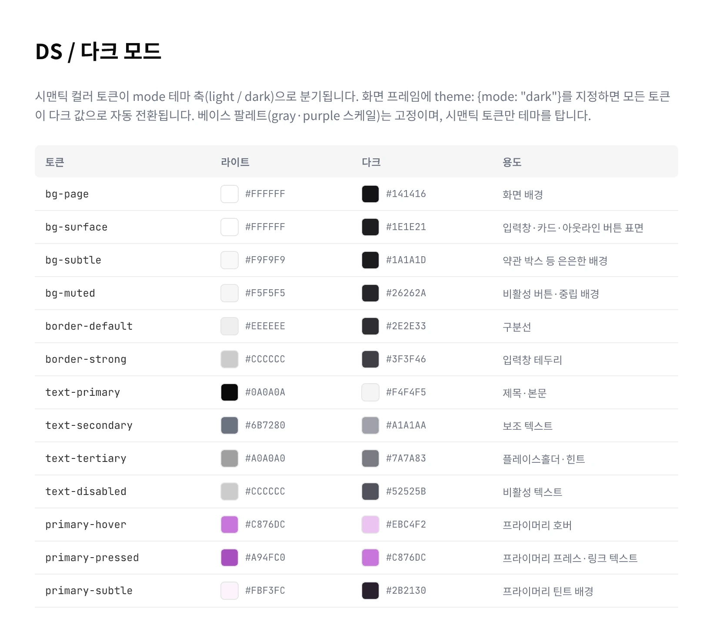
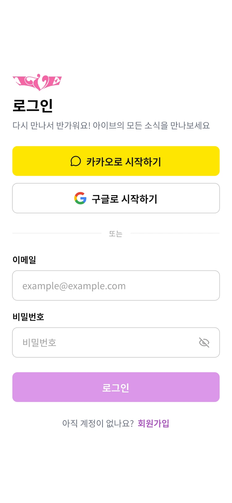
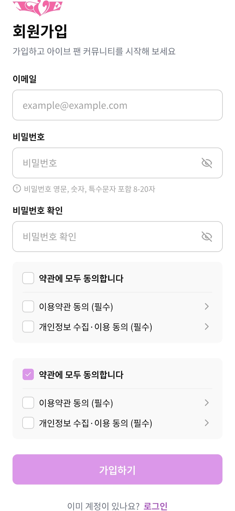
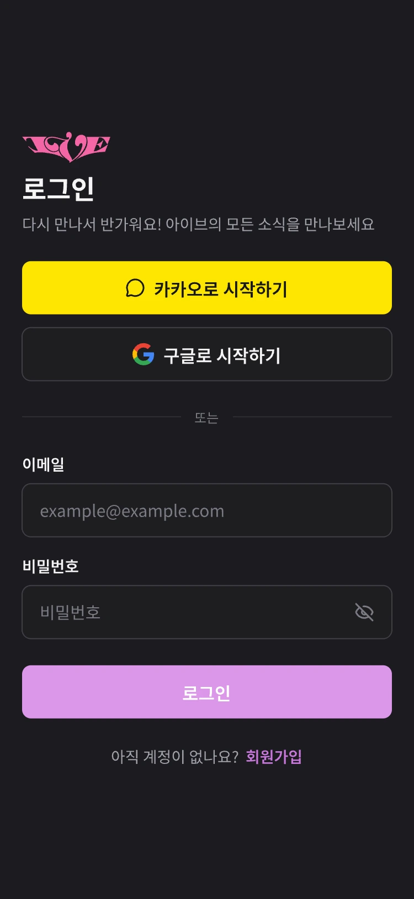
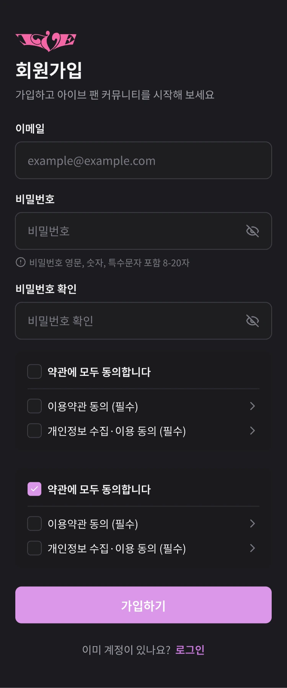

디자인 시스템
2026 리뉴얼 UI의 단일 기준 — 토큰 · 컴포넌트 · 다크 모드
아이브(IVE) 팬 커뮤니티 · 굿즈 커머스 서비스 “IVE로 DIVE”의 디자인 시스템.
브랜드 Purple 램프를 중심으로 색상 · 타이포그래피 · 간격 토큰과 공용 컴포넌트를 정의하고,
라이트 · 다크 2개 모드를 하나의 시맨틱 토큰으로 운용한다.
색상
브랜드 Purple 6단계 램프(기준색 purple-300 #DB97E9)와 Orange 액센트 3단계,
Neutral 10단계(white + gray-50~900), 상태색 5종(success · warning · error · info · kakao).
실제 UI는 원시 팔레트를 직접 쓰지 않고 primary · text-* · bg-* · border-*
시맨틱 별칭을 통해 참조한다.

타이포그래피
Noto Sans KR 단일 서체. 타입 스케일 8단계(12 ~ 36px),
자간 -0.2px, 행간 tight 1.2 / normal 1.4 / relaxed 1.6,
웨이트는 Regular 400 · SemiBold 600 · Bold 700 3종만 사용한다.

간격 · 라디우스 · 그림자
간격은 4px 배수 10단계(space-4 ~ space-64).
라운드는 sm 4 / md 6 / lg 8 / xl 16 / full,
그림자는 3단계로 제한한다.

컴포넌트
모든 버튼은 ui/button variant(브랜드 primary · kakao · outlineBrand · plain 등)와 size로 통일.
인풋은 h-12 · rounded-lg에 브랜드 포커스 링, 여기에 배지 · 체크박스 등 공용 위젯을 더한다.

다크 모드
mode: light | dark 테마 축 하나로 시맨틱 토큰이 통째로 전환된다.
다크 팔레트는 zinc 쿨톤 — 배경 #1B1B1F · 서피스 #1E1E21 · 보더 #2E2E33,
primary 계열은 다크 전용 purple 램프로 매핑.

화면 적용 — 로그인 · 회원가입
디자인 시스템을 처음 적용한 화면. 컴포넌트 조립만으로 구성했으며, 동작 명세는 기능명세서 v2 — 4. 인증 (AUTH-01~12) 참고.



